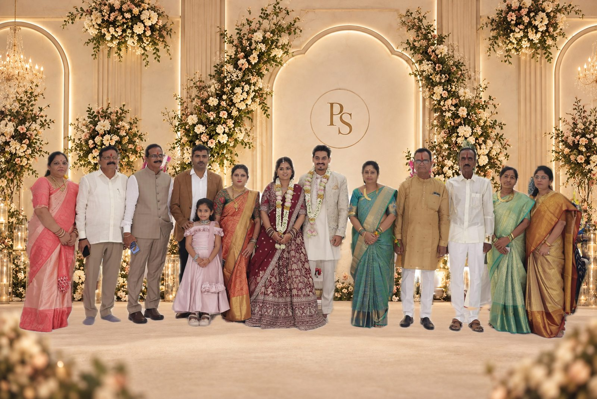

Two Familiesಎರಡು ಕುಟುಂಬಗಳು
With the blessings ofಆಶೀರ್ವಾದದೊಂದಿಗೆ
Nagendrarao & Sangeeta Deshmukh ನಾಗೇಂದ್ರರಾವ್ ಮತ್ತು ಸಂಗೀತಾ ದೇಶಮುಖ್ Ishwar Kadari & the late Shaila Kadari ಈಶ್ವರ್ ಕದರಿ ಮತ್ತು ದಿವಂಗತ ಶೈಲಾ ಕದರಿ
Two households that have known celebration, patience and love, now joined by one. ಆಚರಣೆ, ತಾಳ್ಮೆ ಮತ್ತು ಪ್ರೀತಿಯನ್ನು ಕಂಡ ಎರಡು ಮನೆಗಳು ಈಗ ಒಂದಾಗುತ್ತಿವೆ.
